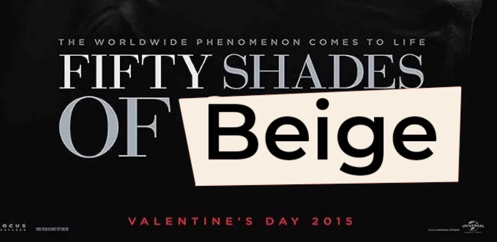
Interieur Leeuwerikenlaan 25
Mockups en notities.
Bij twijfel → meer beige.
Badkamer
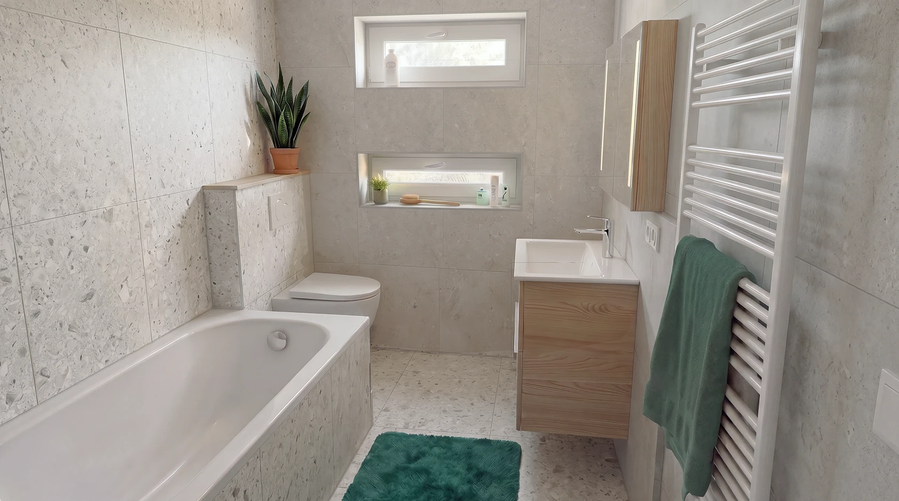
Tegels en voeg
Volledig uittegelen in Ceppo di Gré 600×600×9 mm.
We hebben een specifieke voegkleur gekozen, maar dat is Heleen haar ding: haar eens vragen. Ik ben akkoord met Tom als hij een betere voegkleur voorstelt. Dat is eventueel uit te vechten tussen Tom en Heleen, ik hou me erbuiten 🤷
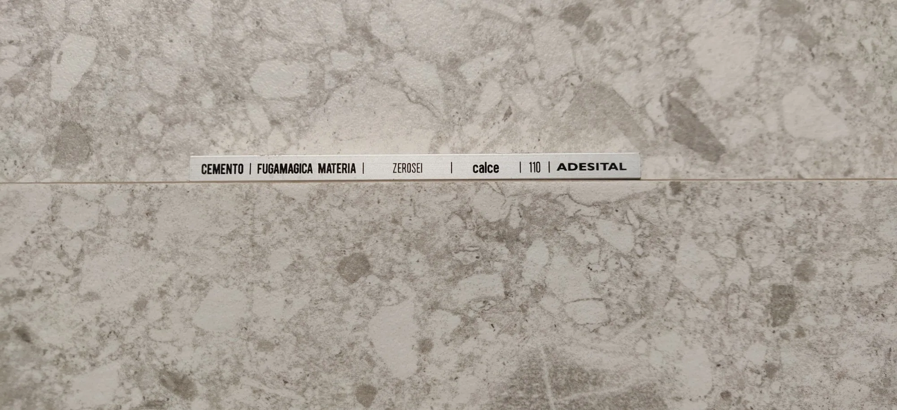
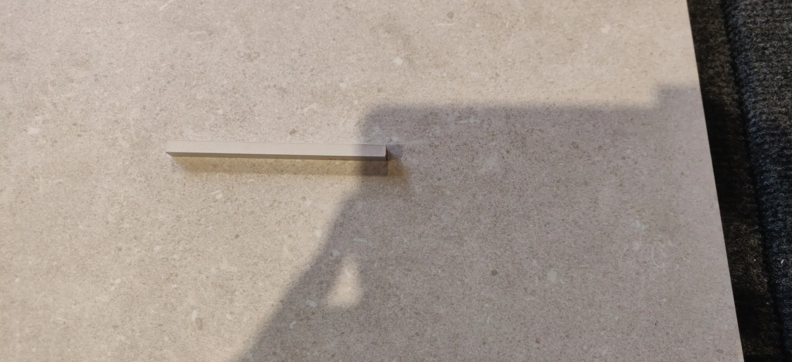
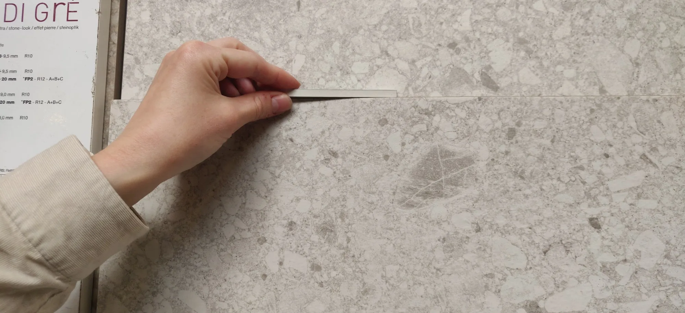
Voorstel: houten tabletje
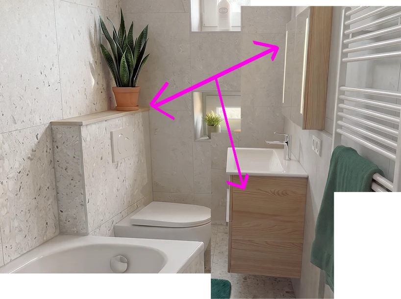
Een houten tabletje bovenop het WC, in dezelfde accentkleur als de meubels van DESCO.
Douchescherm
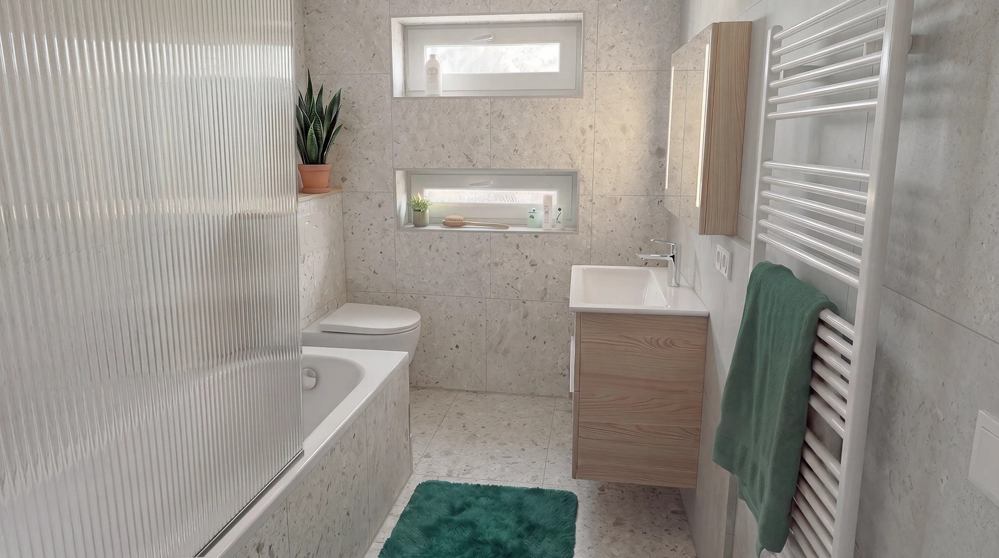
Het douchescherm installeren we als laatste. Ik ga proberen om deze maand nog een geribbelde glaswand in de juiste maat te vinden. Ik denk dat dat heel ferm staat bij de klassiekere, simpele badkamerlook.
Momenteel is er een gewone glasplaat besteld bij DESCO. Die kunnen we teruggeven als we het juiste stuk vinden.
Inspiratie: metalen accentrandjes
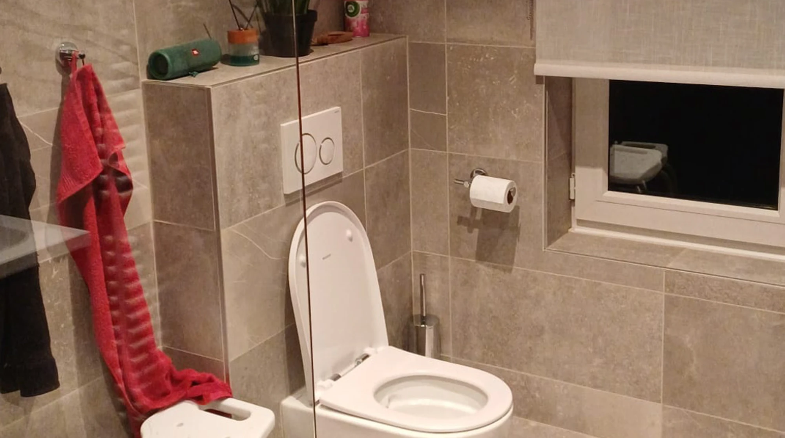
Gastentoilet
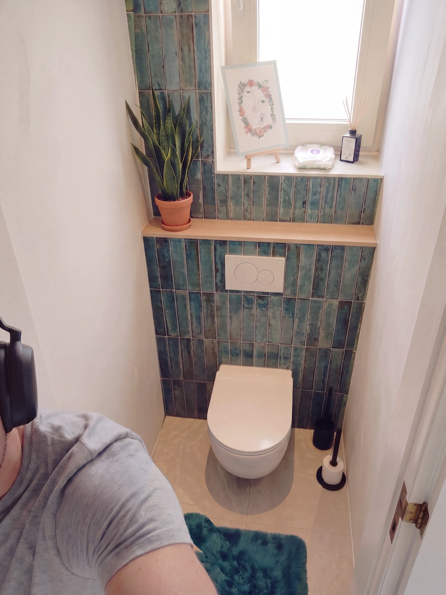
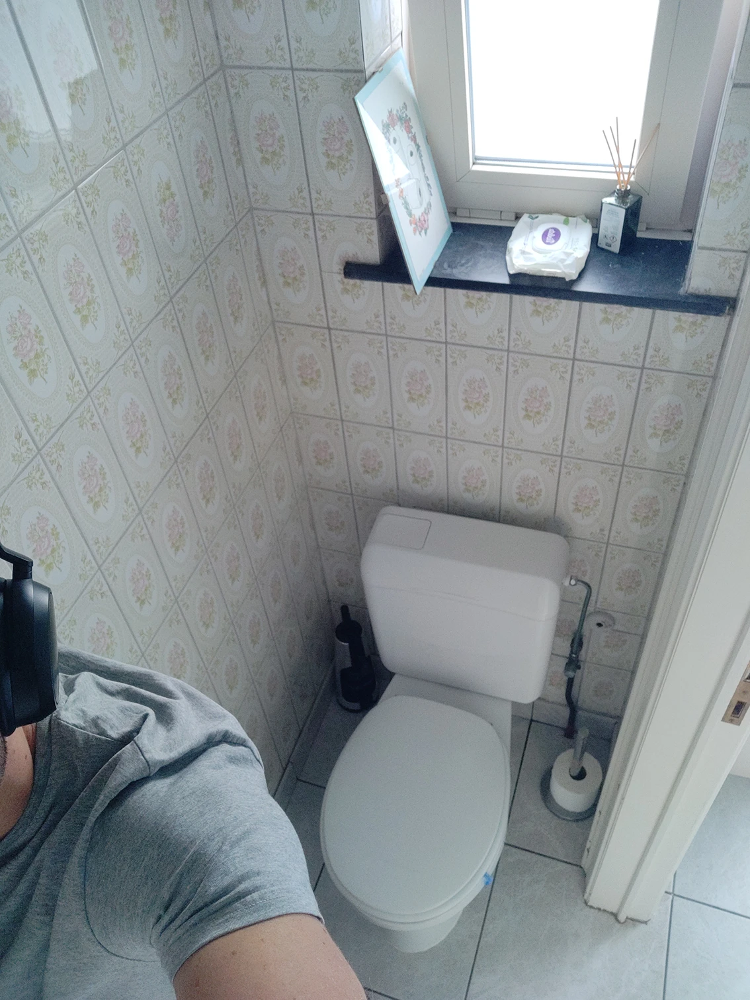
VoorNaSchuif om voor en na te vergelijken
Strijd met Heleen verloren. Ik had dit liever volledig uitgetegeld gezien, maar ze wil een accenttegel met gipsmuren 🤷
Bij verdere vragen gelieve u te wenden tot de bouwheer (Heleen).
Mockup met verlichte spiegel
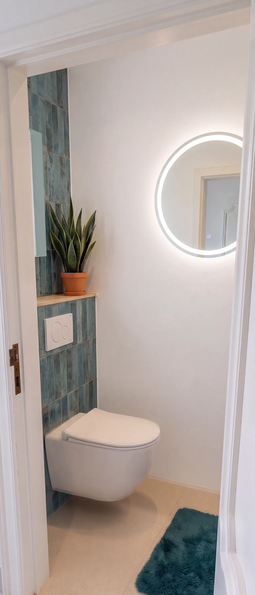
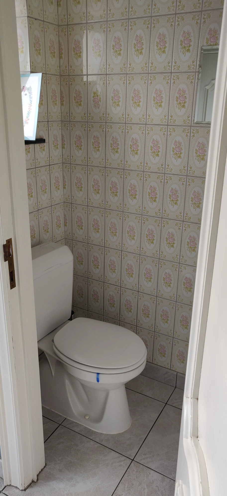
VoorMockupNota: die verlichte spiegel gaan we niet doen, zegt Heleen. Ik vond hem wel ferm, maar dat was een uitvinding van de AI.
Woonkamer
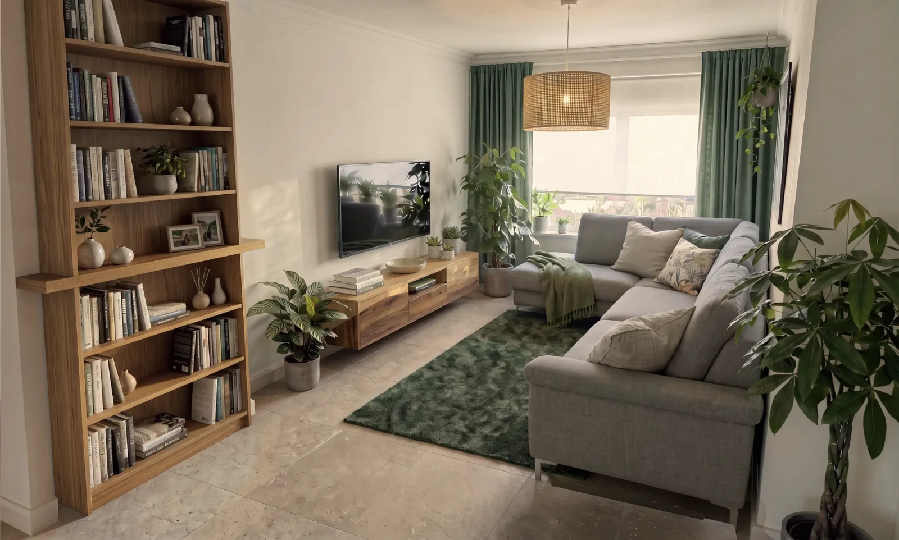
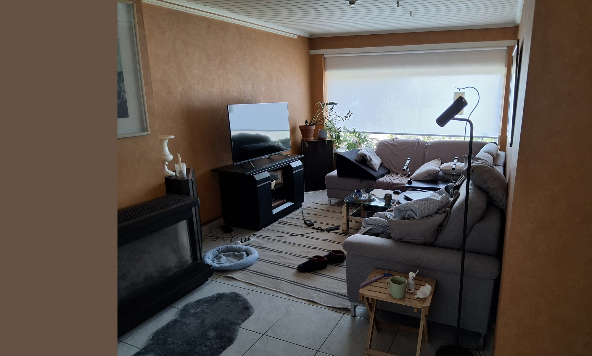
VoorMockupSchuif om voor en mockup te vergelijken
Beneden volledig tegelen in Acron beige, tegel 600×600×9 mm. De tegelplinten zijn 100 mm hoog.
Afwerking met een church white tot lichtbeige verf, overal lamuren (model moeten we nog kiezen).
De AI-mockup klopt nog niet volledig met de tegel. De tegels zijn wel effectief vierkant, 60×60 cm. Maar als mockup volstaat dit wel.
Gang en inkom
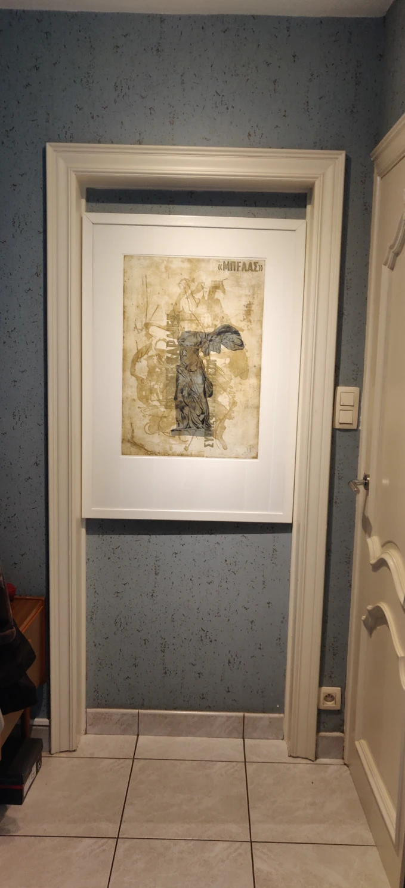
Nog nader te bepalen, maar we gaan proberen de gang in zo origineel mogelijke staat te herstellen.
Deze gang dient als een klein aandenken aan mijn pa. Hij deed steendruk (lithografie), daarom past het behang bij zijn werk.
Garage
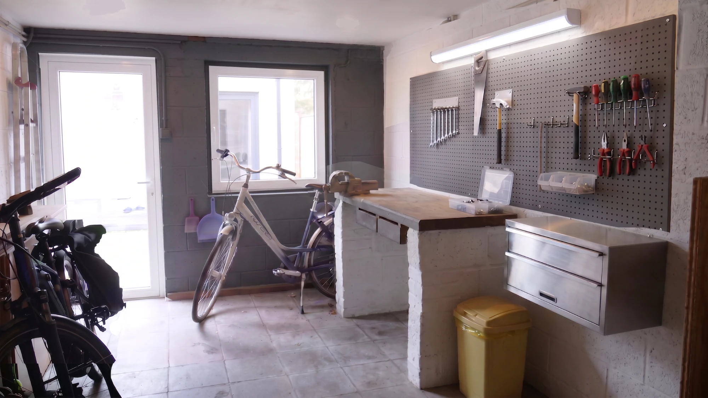
Wit afschilderen en plafond uitplakken. Rap rap, goedkope verf, alles opbouw: het is een garage e mannen, we gaan niet zeveren.
RAL 7015 als accentmuur, dan zijn voor- en achterkant van de garage ook gelijkaardig.
Oudere ontwerpen
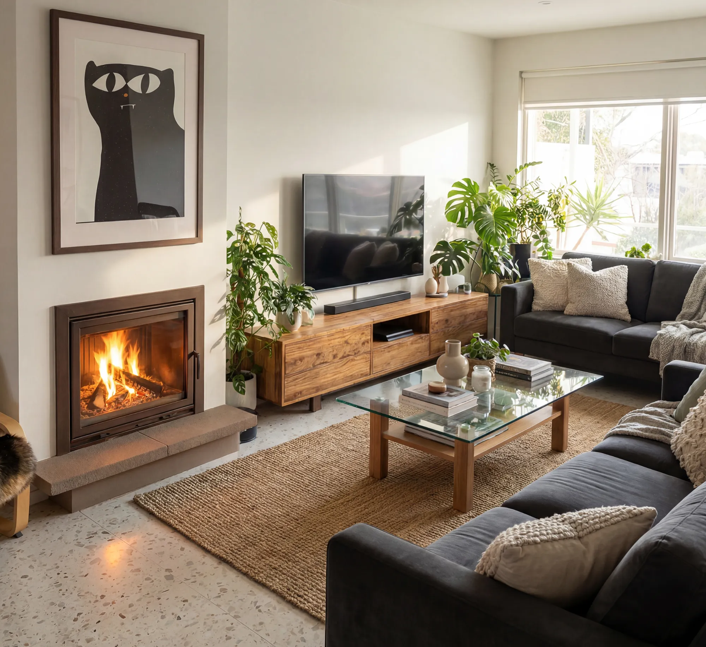
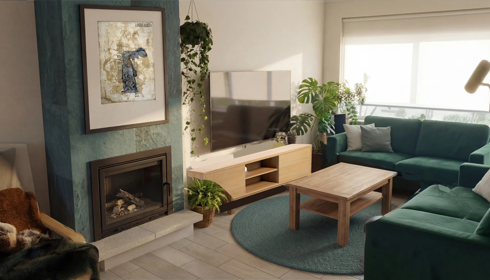
Oude ontwerpen van de living, niet meer haalbaar door het wegvallen van de schouw.
Maar eens bespreken met Tom: latere toevoeging van een inbouwcassette en de schouwmantel aftegelen, haalbaar?